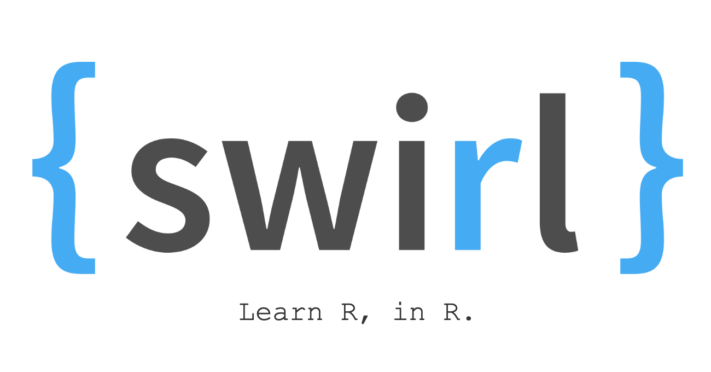

Intro R with swirl
May 19, 2023
About
In this exercise, students are introduced to the basics of R using the swirl package (https://swirlstats.com), which teaches students R from within the R console. The primary goal of this exercise is to get students comfortable interacting with the R console.

Skills Level
Genetics
Novice: no genetics knowledge needed
Programming skills
Novice: no programming experience needed
Format
- Class Type: Lab (computer based)
- Lesson Length: One class period (2-3 hr lab)
- 40 min setup and introduction (for shorter lab periods, these can be done ahead of time)
- 2 hr core lab exercises
- Optional 20 min “challenge” exercise
Learning Objectives
- Open RStudio and locate important panels (R console, Help)
- Run commands in the R console
- Explain what vectors and dataframes are in R
- Use common R commands to work with R objects (e.g. assign, print, subset, math operations)
- Explore a dataset using base R commands (e.g.
dim,summary,str)
Core Competencies
This activity addresses the following core concepts and competencies:
| Vision and Change |
Competencies
|
| Bioinformatics |
|
Core concepts and competencies are taken from the following sources:
GDSCN Collection
This exercise is part of a collection of teaching resources developed through the Genomic Data Science Community Network (GDSCN). GDSCN works towards a vision where researchers, educators, and students from diverse backgrounds are able to fully participate in genomic data science research. Learn more about GDSCN by visiting https://www.gdscn.org/home or reading the article in Genome Research.